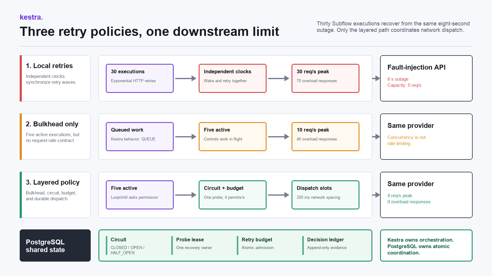
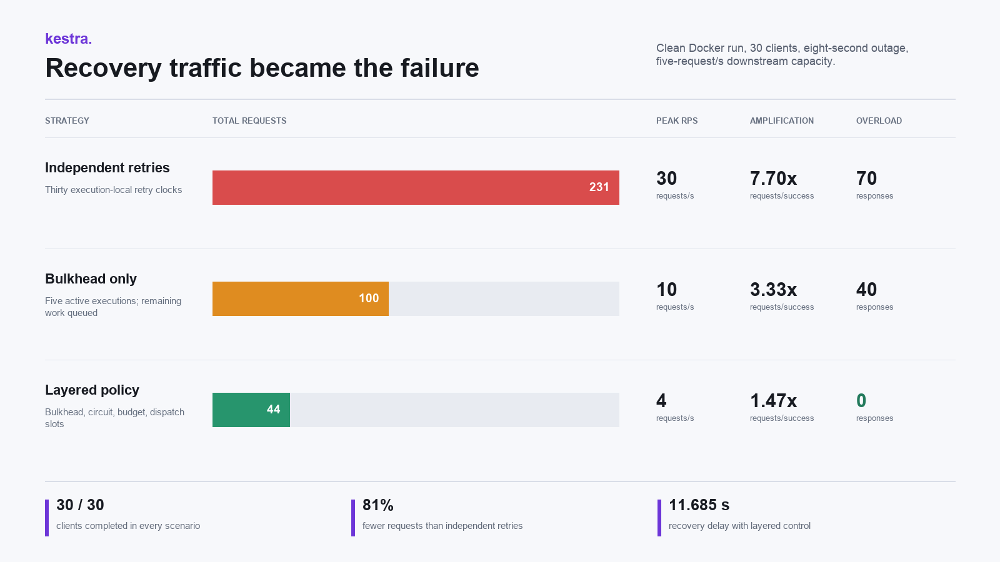

{kind=link}
{kind=link}
The Retry Storm Was the Outage: Coordinating Retry Budgets in Kestra
Thirty correct retry loops produced 231 requests for 30 successful calls. The fix required a bulkhead, a shared circuit, and durable dispatch pacing.
An eight-second downstream outage ended. The traffic did not.
Thirty Kestra executions were each running a reasonable exponential retry policy. Every execution eventually succeeded, but together they issued 231 requests for 30 successful operations. The recovery traffic peaked at 30 requests per second against a service that could accept five. After the scheduled outage cleared, the retries produced another 70 overload responses.
At that point the retry policy was the outage.
This article documents a controlled failure-injection lab, not a production incident. The point was to make retry amplification visible in Kestra, compare three policies under the same conditions, and package the result so another engineer can reproduce it rather than trust a diagram.
The final policy completed all 30 operations with 44 requests, held the peak to four requests per second, and produced zero overload responses. Getting there required one correction I did not expect: limiting permit issuance was insufficient because permits and actual network calls happened in different Kestra tasks.
The Experiment Contract
I wanted a test small enough to run on a laptop and strict enough to expose coordination mistakes.
The lab launches 30 Kestra Subflow executions against one fault-injection API. The API has an eight-second scheduled outage and a post-recovery capacity of five requests per second. If traffic crosses that capacity, the API enters a 1.5-second overload cooldown. Every request, response reason, circuit decision, and client completion is persisted in PostgreSQL.
The three scenarios use the same client count, outage, capacity, cooldown, and provider latency:
- Each execution retries independently with exponential backoff.
- The same retry policy runs behind a flow concurrency limit of five.
- A layered policy combines a five-execution bulkhead, a shared circuit breaker, four retry permits per second, and durable dispatch slots spaced 250 milliseconds apart.
The fourth permit rather than the fifth is deliberate. A retry budget should leave headroom for normal traffic and timing error. Spending the provider's entire advertised capacity on recovery is optimistic in a way that usually becomes educational at 3 AM.

The Docker package runs Kestra 1.3.21 with PostgreSQL repository and queue backends, PostgreSQL 16.14, and a Python 3.12.11 fault-injection API. The final clean run used an ARM64 Docker Engine 29.5.2 environment. Images are pinned by digest, and the mock API dependency is pinned by exact version.
Strategy One: Every Execution Retries Correctly
The baseline client flow uses Kestra's HTTP Request task with exponential retries:
- id: call_downstream
type: io.kestra.plugin.core.http.Request
uri: "http://mock-api:8080/work?run_id={{ inputs.run_id }}&client_id={{ inputs.client_id }}"
method: GET
timeout: PT5S
retry:
type: exponential
interval: PT1S
maxInterval: PT4S
delayFactor: 2
maxAttempts: 12
maxDuration: PT2MThere is nothing obviously reckless in that task. A one-second initial delay, exponential growth, a four-second cap, and a bounded attempt count are normal choices for a transient 503.
The problem is scope. Each execution sees only its own failure and schedules only its own retry. Thirty identical executions begin together, fail together, and wake together. Exponential backoff changes the spacing between waves, but it does not coordinate the members of a wave.
The clean baseline execution was 5bLjJFkgP7jbAvZzCxBMnv. It completed all 30 clients, so a success-only dashboard would call it healthy. PostgreSQL recorded the less flattering version:
- 231 total requests
- 201 failed requests
- 30 requests per second at the peak
- 7.70 requests per successful client
- 70 responses caused by capacity exhaustion or overload cooldown
- 18.451 seconds from scheduled recovery until the final client completed
Local retries were correct in isolation and destructive in aggregate. That distinction is the core of the experiment.
Strategy Two: A Bulkhead Is Not a Rate Limit
Kestra supports a flow-level concurrency property that limits how many executions of a flow may run at the same time. I added a five-execution bulkhead and queued the rest:
concurrency:
behavior: QUEUE
limit: 5This is useful. It reduced the clean run from 231 requests to 100 and lowered the peak from 30 to 10 requests per second. Retry amplification fell from 7.70 to 3.33.
It still produced 40 overload responses.
The reason is mechanical. Concurrency controls active executions, not request rate. Five executions can each finish an HTTP call in 250 milliseconds and collectively produce more than five requests in one second. They can also align their retries. A bulkhead limits how much work is in flight, but it does not define how quickly that work may cross an external boundary.
The official Kestra documentation describes concurrency as a global execution limit for a flow. That is the right abstraction. Treating it as an API rate limiter would assign it a contract it does not have.
The bounded execution 5lxH7qY7ADFEqDBXAygv1f proved the useful middle ground: concurrency reduced the blast radius, but the downstream still needed coordinated recovery traffic.
The Shared State Machine
The third strategy adds a PostgreSQL-backed coordinator. PostgreSQL is not replacing Kestra's orchestration. Kestra still owns the 30 child executions, loops, conditions, sleeps, HTTP tasks, and topology. PostgreSQL provides the atomic shared decision that independent executions cannot make safely in memory.
The circuit state is keyed by experiment run and contains:
state CLOSED | OPEN | HALF_OPEN
consecutive_failures failure threshold input
next_probe_at earliest permitted half-open probe
probe_owner the one execution allowed to probe
probe_lease_until recovery if the probe owner disappears
token_bucket current admission window
tokens_used permits consumed in that window
next_dispatch_at durable network pacing cursorEach client asks acquire_permission() before it calls the provider. The function locks the circuit row with SELECT ... FOR UPDATE and returns one of four decisions:
CALL circuit closed and retry budget available
PROBE this execution owns the half-open probe lease
DEFER circuit open, probe in flight, or budget exhausted
COMPLETE this client already completedThe circuit opens after three failures. While open, clients do not call the provider. After three seconds, one client receives a probe lease. A successful probe closes the circuit; a failed probe reopens it. Late failures from calls that were already in flight are recorded, but they do not move next_probe_at and keep extending the outage.
That last condition came from a bug in the first version. Several calls had already received permission when the third failure opened the circuit. Their later 503 results repeatedly wrote another open transition and pushed the probe time forward. The state machine was technically serialized and still wrong. Row locking prevents races; it does not fix transition semantics.
The Scheduling Gap Between a Permit and a Call
My first coordinated version granted at most four permits per second in PostgreSQL and then let a later Kestra HTTP task perform the call.
It looked correct in the code. It also passed one run.
The clean-volume rerun failed the claim. Under a different scheduler load, permitted executions waited in Kestra and several HTTP tasks became runnable together. The coordinator had limited permit time, not network time. The downstream peak reached nine requests per second and overload returned.
That was the most useful failure in the project because it exposed a boundary hidden by the YAML:
SQL task grants permit
-> Kestra schedules next task
-> worker becomes available
-> HTTP task actually sends requestThose timestamps are not interchangeable.
The final design keeps the admission budget and adds a durable dispatch cursor. Every coordinated call reserves a timestamp before the provider side effect:
select circuit_state.next_dispatch_at
into v_next_dispatch_at
from retry_lab.circuit_state
where circuit_state.run_id = p_run_id
for update;
v_dispatch_at := greatest(v_now, v_next_dispatch_at);
update retry_lab.circuit_state
set
next_dispatch_at =
v_dispatch_at
+ ((1000.0 / v_retry_budget_rps) * interval '1 millisecond'),
updated_at = v_now
where circuit_state.run_id = p_run_id;The provider adapter waits until that reserved slot before it records the downstream request. At four permits per second, slots are separated by 250 milliseconds. If Kestra releases several HTTP tasks together, they reserve different dispatch times and leave the adapter at a controlled pace.
This is not an excuse to hide orchestration inside an HTTP service. Kestra still decides whether the call is allowed, whether an execution owns the probe, whether it should defer, and when the client is complete. The adapter enforces the final timing at the boundary where timing becomes real.
In another architecture, that pacing layer could be an API gateway, a queue consumer, or a dedicated rate-limiting proxy. The important property is that admission and dispatch cannot drift apart without a second control.
The Kestra Recovery Loop
The coordinated child flow uses LoopUntil to make the state machine visible:
- id: coordinate_recovery
type: io.kestra.plugin.core.flow.LoopUntil
condition: "{{ outputs.check_completion.row.completed == true }}"
failOnMaxReached: true
checkFrequency:
interval: PT0.1S
maxDuration: PT3M
maxIterations: 360
tasks:
- id: acquire_permission
type: io.kestra.plugin.jdbc.postgresql.Query
fetchType: FETCH_ONE
sql: |
select *
from retry_lab.acquire_permission(
'{{ inputs.run_id }}',
'{{ inputs.client_id }}'
);
- id: route_permission
type: io.kestra.plugin.core.flow.If
condition: >-
{{
outputs.acquire_permission.row.action == 'CALL'
or outputs.acquire_permission.row.action == 'PROBE'
}}
then:
- id: call_downstream
type: io.kestra.plugin.core.http.Request
uri: "http://mock-api:8080/coordinated-work?run_id={{ inputs.run_id }}&client_id={{ inputs.client_id }}"
options:
allowFailed: true
- id: record_result
type: io.kestra.plugin.jdbc.postgresql.Query
fetchType: FETCH_ONE
sql: |
select *
from retry_lab.record_result(
'{{ inputs.run_id }}',
'{{ inputs.client_id }}',
{{ outputs.call_downstream.code }}
);
else:
- id: defer_attempt
type: io.kestra.plugin.core.flow.Sleep
duration: PT0.4SThe flow does not use the HTTP task's automatic retry policy. A 503 is data for the coordinator, so allowFailed: true keeps the task successful and passes the response code into record_result(). The loop decides what happens next.
There are two bounded waits. LoopUntil has a three-minute maximum and 360-iteration ceiling. A probe owner has a three-second lease, so a dead execution cannot leave the circuit stuck in HALF_OPEN. These are separate failure domains and need separate limits.
Measured Results

Independent retries: 231 requests, 201 failed requests, 30 peak requests per second, 7.70 requests per success, 70 overload responses, and 18.451 seconds of recovery delay.
Five-execution bulkhead: 100 requests, 70 failed requests, 10 peak requests per second, 3.33 requests per success, 40 overload responses, and 16.974 seconds of recovery delay.
Bulkhead, circuit, budget, and pacing: 44 requests, 14 failed requests, 4 peak requests per second, 1.47 requests per success, zero overload responses, and 11.685 seconds of recovery delay.
All three strategies completed all 30 clients. The difference was how much additional failure they generated while doing it.
The final execution was 2plUaoV3Ds5hiykILUsghw. It opened or reopened the circuit twice, granted two half-open probes, and recorded 45 deferred attempts. Deferral was not failure. It was the mechanism that prevented 45 attempts from becoming immediate network traffic.
Compared with independent retries, the layered policy reduced total requests by about 81 percent and eliminated overload responses in the clean run. I would not generalize that percentage beyond this experiment. The useful result is the shape: local backoff amplified synchronized work, the bulkhead reduced but did not regulate it, and shared admission plus dispatch pacing kept recovery below downstream capacity.
Reproduce It
The complete repository is available at github.com/arjunarav/kestra-retry-storm-lab.
Start the pinned stack and run all three scenarios:
git clone https://github.com/arjunarav/kestra-retry-storm-lab.git
cd kestra-retry-storm-lab
cp .env.example .env
docker compose up -d --build
python3 -u scripts/run_experiment.pyKestra is available at http://127.0.0.1:8082 with the local credentials admin@kestra.io and Admin1234. The runner imports all six flows, executes the scenarios sequentially, waits for terminal states, and writes results/latest-run.json.
Exact counts vary slightly with local scheduling. The assertions that matter are structural: 30 completed clients in each run, overload in the first two strategies, zero overload in the layered strategy, and lower retry amplification after coordination.
The repository also includes SQL queries for inspecting per-second traffic and the append-only decision ledger.
What I Would Carry Into Production
I would start by treating every retry as load, not as a harmless control-flow feature. Backoff belongs at the execution level, but a shared dependency also needs a shared budget. The budget should reserve headroom instead of consuming the provider's full limit.
I would keep the bulkhead even after adding a circuit breaker. They solve different problems. The bulkhead limits work in flight, the circuit stops calls during a known outage, the retry budget controls admission, and dispatch pacing handles scheduler jitter at the network boundary.
I would partition coordinator rows by dependency and tenant rather than force unrelated traffic through one hot lock. PostgreSQL row locks made this lab easy to reason about, but a single global row would become its own bottleneck. Production code also needs lock timeouts, statement timeouts, coordinator metrics, retention for the decision ledger, and failover tests.
I would still require provider idempotency. A retry budget controls volume; it does not make side effects safe. The checkout-saga lesson still applies: a timeout can mean unknown state, and the recovery path must query evidence before repeating a non-idempotent action.
Most importantly, I would measure the time of the actual external call. The first coordinated implementation measured permit issuance and assumed the network would follow immediately. The clean rerun removed that assumption for me.
Before I add a retry now, I ask two questions: who else will retry at the same time, and where is the final dispatch rate enforced?
References
- Kestra flow concurrency documentation
- Kestra task retries documentation
- Kestra HTTP Request task
- Kestra LoopUntil task
- Kestra PostgreSQL Docker Compose example
- PostgreSQL explicit locking
- AWS Builders' Library: Timeouts, retries, and backoff with jitter
Author Note
I built and ran this lab locally in Docker, reset its volumes, and reran the complete package from the checked-in files before writing the final results. The repository includes the Kestra YAML, PostgreSQL functions, mock provider, execution runner, and measured output used in this article.